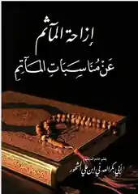

إزاحة المآثم عن مناسبات المآتم
Habib Abu Bakar al-Adni bin Ali al-Masyhur

Ringkasan 10–15 menit belum siap diterbitkan. Draf sekitar 10 menit tersimpan privat untuk pemeriksaan editorial; cover gambar pengguna sudah dipasang di cabang review.
Kembali ke katalog